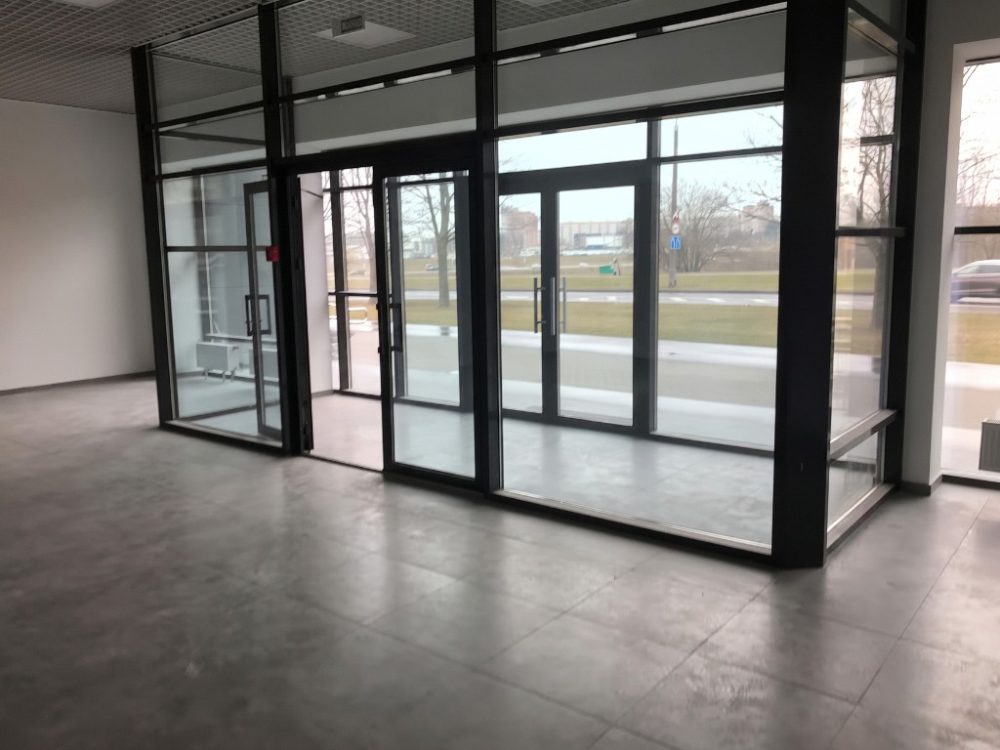
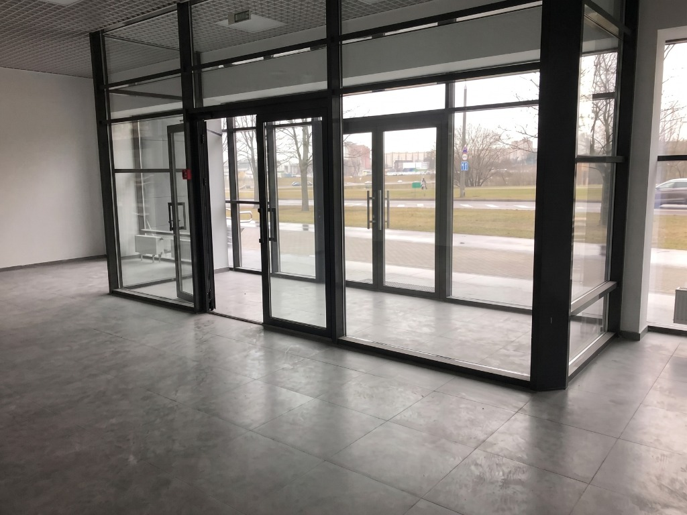

Pose de film miroir sans tain sur sas d'entrée vitré
Un sas d'entrée d'entreprise manquant de confidentialité face à la rue, tout en subissant la chaleur. Le film miroir garantit l'intimité tout en préservant une vue parfaitement claire vers l'extérieur.


Le problème : vue directe de la rue
Le sas d'entrée de ce bâtiment professionnel offre une belle modernité architecturale et un sas thermique efficace, mais donnait littéralement sur la rue et le passage extérieur. N'importe quel piéton pouvait voir directement à l'intérieur des locaux. De plus, les grandes vitres non protégées captaient énormément de chaleur dès que la façade passait au soleil.
La transparence préservée depuis l'intérieur
L'objectif était de protéger l'accueil des regards extérieurs sans créer une impression d'enfermement pour le personnel et les visiteurs. Comme le montre très bien le comparatif Avant/Après (pris depuis l'intérieur), la pose d'un film solaire ne modifie presque pas la vue. La clarté visuelle est totale et la lumière naturelle entre toujours largement.

Un effet miroir total vu de l'extérieur
Vu depuis la rue, le rendu est bluffant. Le vitrage se transforme en un miroir parfait (voir la photo ci-dessus). Ce résultat esthétique ultra-moderne bloque complètement la vision vers l'intérieur, protégeant ainsi la confidentialité de l'entreprise vis-à-vis des regards curieux, tout en rejetant massivement l'énergie solaire de la façade.
Vous avez des vitrages intérieurs sans intimité ?
Voici pourquoi des dizaines de professionnels en Auvergne-Rhône-Alpes ont fait appel à nous.